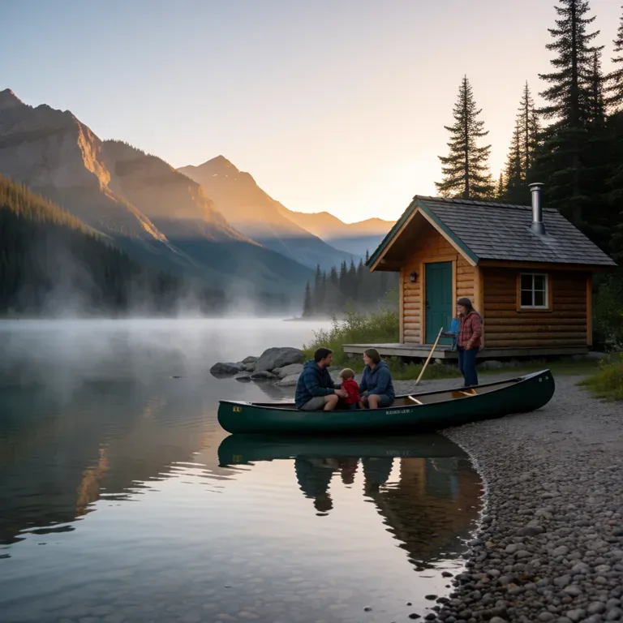

Library
Last 24 hours
 A lived-in family kitchen in warm morning light, sourdough bread on a wooden board, yellow ceramic mug, herbs at the window. Candid editorial photograph, tasteful natural colors, no text.
A lived-in family kitchen in warm morning light, sourdough bread on a wooden board, yellow ceramic mug, herbs at the window. Candid editorial photograph, tasteful natural colors, no text. An overhead photograph of a backyard raised vegetable bed with tomatoes, lettuce and marigolds, gardening gloves on the cedar edge, late afternoon sunlight, warm documentary style.
An overhead photograph of a backyard raised vegetable bed with tomatoes, lettuce and marigolds, gardening gloves on the cedar edge, late afternoon sunlight, warm documentary style. A beautifully crafted school science project showing a miniature pond ecosystem in a glass terrarium with moss, stones and tiny plants on a classroom desk. Editorial photograph, no text.
A beautifully crafted school science project showing a miniature pond ecosystem in a glass terrarium with moss, stones and tiny plants on a classroom desk. Editorial photograph, no text.
1 to 6 days ago
 A golden retriever asleep beside a sunlit living room window, knitted cream blanket and houseplants, quiet ordinary family afternoon, candid photography.
A golden retriever asleep beside a sunlit living room window, knitted cream blanket and houseplants, quiet ordinary family afternoon, candid photography. A coastal walking trail with wildflowers, two bicycles leaned against a wooden fence, blue sea and distant fishing boats, sunny family weekend mood, natural travel photography.
A coastal walking trail with wildflowers, two bicycles leaned against a wooden fence, blue sea and distant fishing boats, sunny family weekend mood, natural travel photography. A cozy reading corner with a green armchair, well-loved paperback, tea and a patchwork quilt, rain on the window, warm lamp light, tasteful interior photography.
A cozy reading corner with a green armchair, well-loved paperback, tea and a patchwork quilt, rain on the window, warm lamp light, tasteful interior photography. A tiny handmade solar-powered model house made of balsa wood with a small solar panel on the roof on a teenager workbench, tools and colored pencils, detailed natural photography.
A tiny handmade solar-powered model house made of balsa wood with a small solar panel on the roof on a teenager workbench, tools and colored pencils, detailed natural photography. A homemade apple tart cooling on a wooden kitchen table, flour-dusted rolling pin, folded linen towel and a bowl of autumn apples, gentle window light, food photography.
A homemade apple tart cooling on a wooden kitchen table, flour-dusted rolling pin, folded linen towel and a bowl of autumn apples, gentle window light, food photography. A ginger cat peeking from a bookshelf between paperbacks and a ceramic vase, lived-in family living room, soft afternoon light, candid photograph.
A ginger cat peeking from a bookshelf between paperbacks and a ceramic vase, lived-in family living room, soft afternoon light, candid photograph.
A small wood cabin beside a mountain lake at sunrise, mist above still water, canoe pulled onto a pebble shore, peaceful family holiday scene, travel photograph. A hand-painted watercolor study of local wildflowers on a sketchbook page, paint palette and brushes on a teenager desk, warm natural light, charming believable craft photograph, no lettering.
A hand-painted watercolor study of local wildflowers on a sketchbook page, paint palette and brushes on a teenager desk, warm natural light, charming believable craft photograph, no lettering. Basil rosemary and thyme growing in terracotta pots on a kitchen windowsill, old brass watering can, morning sun and soft shadows, honest domestic photograph.
Basil rosemary and thyme growing in terracotta pots on a kitchen windowsill, old brass watering can, morning sun and soft shadows, honest domestic photograph. A simple backyard birthday table with a homemade lemon cake, linen tablecloth, flowers in jam jars and warm string lights, intimate family celebration, no people no text, editorial photograph.
A simple backyard birthday table with a homemade lemon cake, linen tablecloth, flowers in jam jars and warm string lights, intimate family celebration, no people no text, editorial photograph. View from a train window over rolling countryside in autumn, a travel journal and two takeaway coffee cups on the small table, warm quiet family travel photograph.
View from a train window over rolling countryside in autumn, a travel journal and two takeaway coffee cups on the small table, warm quiet family travel photograph. A handmade wooden birdhouse freshly painted soft blue hanging from an apple tree in a backyard, a small bird nearby, spring sunlight, thoughtful school craft project photograph.
A handmade wooden birdhouse freshly painted soft blue hanging from an apple tree in a backyard, a small bird nearby, spring sunlight, thoughtful school craft project photograph.
7 to 11 days ago
 Rain drops on a small covered patio with terracotta planters, a folded green umbrella and two wooden chairs, warm light through a kitchen door, cozy documentary photograph.
Rain drops on a small covered patio with terracotta planters, a folded green umbrella and two wooden chairs, warm light through a kitchen door, cozy documentary photograph. A family picnic blanket beside a quiet lake, wicker basket, strawberries and sandwiches, shoes placed neatly on grass, golden afternoon light, candid travel photograph.
A family picnic blanket beside a quiet lake, wicker basket, strawberries and sandwiches, shoes placed neatly on grass, golden afternoon light, candid travel photograph. A backyard vegetable garden at dusk with a stone path, climbing beans and warm porch lights, the first stars above, peaceful lived-in home photography.
A backyard vegetable garden at dusk with a stone path, climbing beans and warm porch lights, the first stars above, peaceful lived-in home photography.- 0:04The tomatoes are ready to pick. Please water the herb pots before dinner.
- 0:05Our solar house uses sunlight to power a tiny fan. We tested it on a cloudy day too.
- 0:05On Saturday we will take the train to the coast, walk by the harbor, and have a picnic.
- 0:06Hi June. Welcome to our household gateway. You can try a voice message or make a picture of your garden.
- 0:07For the apple tart, slice the apples thinly and bake until the pastry is golden. Let it cool before serving.
 A gentle breeze moves the leaves in a sunlit backyard vegetable garden, a watering can beside the raised bed, quiet warm family afternoon, slow steady camera. Audio: birds chirping softly.
A gentle breeze moves the leaves in a sunlit backyard vegetable garden, a watering can beside the raised bed, quiet warm family afternoon, slow steady camera. Audio: birds chirping softly.